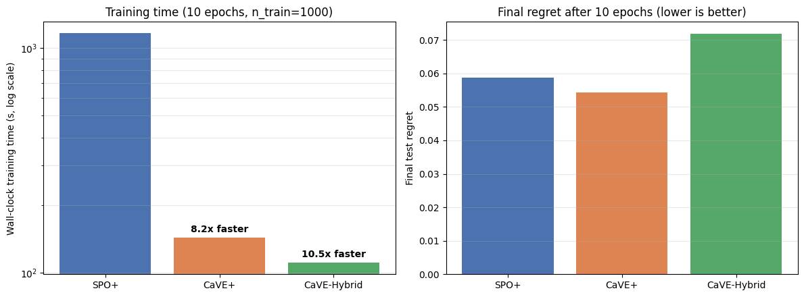
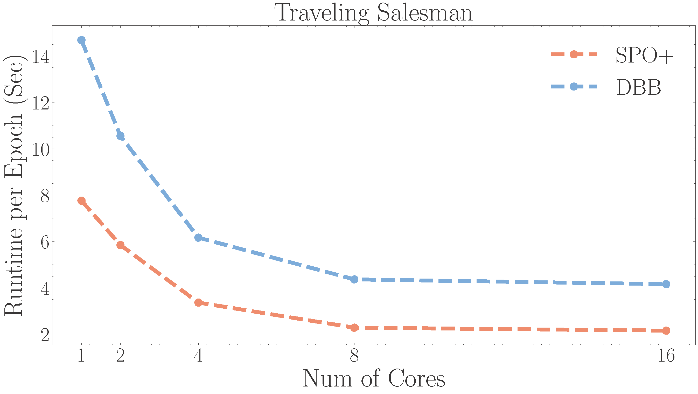

Training Methods¶
Overview¶
pyepo.func provides PyTorch autograd modules that wrap an optimization solver for end-to-end training. All modules assume a linear objective with known, fixed constraints; the cost vector is predicted from contextual features.
The modules fall into two interfaces:
Loss-returning modules produce a scalar loss and feed straight into
.backward().Solution-returning modules produce predicted, expected, or regularized solutions; the user defines a task loss on top.
For training-loop templates, see Training Loops.
Choosing a Method¶
The modules differ in what they return, which determines how you use them:
Loss-returning — return a scalar loss, passed directly to
.backward(): SPO+, PFYL, RFYL, NCE, CMAP, LTR, PG, CaVE.Solution-returning — return a predicted, expected, or regularized solution, on which you define a task loss: DPO, DBB, NID, RFWO, I-MLE, AI-MLE.
A combined name like DPO+MSE or NID+L1 denotes a solution-returning module (DPO, NID) followed by a task loss (here MSE or L1) on its output.
The table below summarizes each module’s return type, typical supervision, and notes.
Module |
Returns |
Typical supervision |
Notes |
|---|---|---|---|
|
loss |
true costs, true optimal solutions, true objective values |
convex surrogate for regret |
|
loss |
true costs |
directional finite differences along the true cost |
|
expected perturbed solutions |
task loss chosen by the user |
DPO; use the multiplicative variant for sign-sensitive oracles |
|
loss |
true optimal solutions |
PFYL; use the multiplicative variant for sign-sensitive oracles |
|
perturbed solutions |
task loss chosen by the user |
perturb-and-MAP with Sum-of-Gamma noise |
|
regularized predicted solutions |
task loss chosen by the user |
L2-regularized smooth optimizer over the convex hull of feasible solutions |
|
loss |
true optimal solutions |
Fenchel-Young loss paired with L2-regularized Frank-Wolfe |
|
predicted solutions |
task loss chosen by the user |
direct solution-level or objective-level losses |
|
loss |
tight binding-constraint normals at the true optimum ( |
CaVE; binary linear programs, Gurobi backend only |
|
loss |
true optimal solutions and a solution pool |
contrastive training with cached negative solutions |
|
loss |
true costs and a solution pool |
learning-to-rank formulations over feasible solutions |
Surrogate Losses¶
Surrogate losses replace the non-differentiable regret with a differentiable training objective.
Smart Predict-then-Optimize+ Loss (SPO+)¶
SPO+ [1] is a convex surrogate loss for the SPO Loss (regret), which measures the decision error of an optimization problem.
The derivation starts from the observation that for any \(\alpha \geq 0\),
Setting \(\alpha = 2\) and bounding \(z^*(2 \hat{\mathbf{c}}) \leq 2 \hat{\mathbf{c}}^\top \mathbf{w}^*(\mathbf{c})\) via the concavity of \(z^*\) gives the SPO+ loss,
which is convex in \(\hat{\mathbf{c}}\) and upper-bounds the regret. By Danskin’s theorem, a subgradient is
- class pyepo.func.SPOPlus(optmodel: optModel, processes: int = 1, solve_ratio: float = 1.0, reduction: Reduction = 'mean', dataset: optDataset | None = None)
SPO+ loss: a convex surrogate for the SPO regret of a linear-objective LP.
SPO+ upper-bounds the SPO regret with a convex function of the predicted cost vector and provides an informative subgradient (via Danskin’s theorem) for end-to-end training. It is the strong default for predict-then-optimize when true optimal solutions \(\mathbf{w}^*(\mathbf{c})\) are available as supervision.
The forward pass solves the perturbed problem with cost \(2\hat{\mathbf{c}} - \mathbf{c}\) once per training instance and returns a scalar loss; the backward pass uses the cached solution to form the subgradient \(2(\mathbf{w}^*(\mathbf{c}) - \mathbf{w}^*(2\hat{\mathbf{c}} - \mathbf{c}))\) without any extra solver call.
Reference: Elmachtoub & Grigas (2022) https://doi.org/10.1287/mnsc.2020.3922
processes sets the number of solver processes (0 uses all available cores).
Perturbation Gradient (PG)¶
PG [10] is a surrogate loss based on zeroth-order gradient approximation via Danskin’s theorem. It uses finite differences along the true cost direction.
By Danskin’s theorem, regret can be written as the directional derivative of \(z^*(\hat{\mathbf{c}})\) along \(\mathbf{c}\) (up to a constant independent of \(\hat{\mathbf{c}}\)). PG approximates this directional derivative with finite differences. Two variants are available, backward (two_sides=False) and central (two_sides=True):
where \(\lambda > 0\) is the finite-difference width (the sigma parameter). The corresponding gradient estimate is
- pyepo.func.PG
alias of
perturbationGradient
sigma controls the finite-difference width. two_sides enables central differencing.
Perturbed Methods¶
Perturbed methods estimate gradients by Monte Carlo averaging over random perturbations of the cost vector. They share two design knobs: n_samples (number of Monte Carlo samples) and sigma (perturbation amplitude).
Differentiable Perturbed Optimizer (DPO)¶
DPO [4] uses Monte Carlo sampling to estimate solutions by optimizing randomly perturbed costs. Its custom backward pass provides a gradient estimator for end-to-end training. DPO is the additive Gaussian version; DPOMul is the multiplicative version for sign-sensitive oracles [5]. The multiplicative variant assumes predicted costs already have the intended nonzero sign. For nonnegative-cost problems, use a positive-output predictor such as nn.Softplus() plus a small epsilon.
DPO replaces the piecewise-constant solution map \(\hat{\mathbf{c}} \mapsto \mathbf{w}^*(\hat{\mathbf{c}})\) with the expectation over a random perturbation,
where \(\boldsymbol{\xi} \sim \mathcal{N}(\mathbf{0}, \mathbf{I})\) and \(K\) is n_samples.
The multiplicative variant DPOMul perturbs each entry of \(\hat{\mathbf{c}}\) as
with \(\odot\) the Hadamard product. The exponential factor preserves the sign of each cost entry, which is required when the solver expects (say) nonnegative edge costs.
- pyepo.func.DPO
alias of
perturbedOpt
- pyepo.func.DPOMul
alias of
perturbedOptMul
Perturbed Fenchel-Young Loss (PFYL)¶
PFYL [4] uses the same perturbed expected solution as DPO inside a Fenchel-Young loss, comparing it directly with the true optimal solution. It returns a scalar loss. PFY is the additive Gaussian version; PFYMul is the multiplicative sign-preserving variant with the same sign convention as DPOMul.
Let \(F(\hat{\mathbf{c}}) = \mathbb{E}_{\boldsymbol{\xi}}\big[ \min_{\mathbf{w} \in \mathcal{S}} (\hat{\mathbf{c}} + \sigma \boldsymbol{\xi})^\top \mathbf{w} \big]\) be the expected perturbed minimum, and let \(\Omega(\mathbf{w}^*(\mathbf{c}))\) be its Fenchel conjugate. The perturbed Fenchel-Young loss is
The dual term \(\Omega(\mathbf{w}^*(\mathbf{c}))\) does not depend on \(\hat{\mathbf{c}}\), so the gradient collapses to a simple difference of solutions,
The multiplicative variant uses the same sign-preserving perturbation,
- pyepo.func.PFY
alias of
perturbedFenchelYoung
- pyepo.func.PFYMul
alias of
perturbedFenchelYoungMul
Implicit Maximum Likelihood Estimator (I-MLE)¶
I-MLE [8] uses the perturb-and-MAP framework, sampling noise from a Sum-of-Gamma distribution and interpolating the loss function to approximate finite differences. lambd controls the interpolation step.
I-MLE is framed as imitation learning: bring the model distribution \(p(\mathbf{w} \mid \hat{\mathbf{c}})\) closer to a target distribution \(q(\mathbf{w} \mid \hat{\mathbf{c}})\) by minimizing their KL divergence. An upstream task gradient \(\mathbf{d} = \nabla_{\mathbf{w}} \mathcal{L}(\hat{\mathbf{c}}, \cdot) \big|_{\mathbf{w} = \mathbf{w}^*(\hat{\mathbf{c}})}\) induces a virtual update \(\hat{\mathbf{c}}' = \hat{\mathbf{c}} + \lambda \mathbf{d}\), and the gradient is estimated by a directional finite difference between the smoothed solutions at \(\hat{\mathbf{c}}'\) and \(\hat{\mathbf{c}}\):
where \(\sigma\) smooths the solution map and \(\lambda\) (lambd) is the finite-difference step. The same noise realization \(\boldsymbol{\xi}_\kappa\) is shared across the two perturbed evaluations to reduce variance.
- pyepo.func.IMLE
alias of
implicitMLE
Adaptive Implicit Maximum Likelihood Estimator (AI-MLE)¶
AI-MLE [9] extends I-MLE with an adaptive interpolation step for better gradient estimates.
AI-MLE uses the same finite-difference estimator as I-MLE but replaces the fixed step size \(\lambda\) with an adaptive choice driven by the magnitudes of the predicted cost and the upstream gradient,
where \(\mathbf{d}\) is the upstream task gradient and \(\alpha_t > 0\) is tuned online: when an exponential moving average of the gradient sparsity (fraction of nonzero entries) drops below one, \(\alpha_t\) is increased; otherwise it is decreased. This rescaling keeps the perturbation magnitude commensurate with \(\hat{\mathbf{c}}\) and decouples the step from the absolute scale of \(\mathbf{d}\), removing the need to tune \(\lambda\) by hand.
- pyepo.func.AIMLE
alias of
adaptiveImplicitMLE
Regularized Methods¶
A pure linear optimization layer is not differentiable: the optimal solution \(\mathbf{w}^*(\hat{\mathbf{c}}) = \arg\min_{\mathbf{w} \in \mathcal{S}} \hat{\mathbf{c}}^\top \mathbf{w}\) is piecewise constant in \(\hat{\mathbf{c}}\). It jumps between vertices of \(\mathcal{S}\), and its derivative is zero almost everywhere. Regularized methods fix this by adding a strongly convex regularizer \(\Omega\) to the linear objective, yielding a regularized solution
which is unique, lies inside \(\mathrm{conv}(\mathcal{S})\), and varies continuously with \(\hat{\mathbf{c}}\). This deterministic smoothing is dual to the stochastic smoothing of the perturbed methods above: both replace the piecewise-constant solution map with a continuous surrogate, the former via a convex regularizer and the latter via Monte Carlo averaging over a noise distribution [5].
PyEPO implements the L2 special case \(\Omega(\mathbf{w}) = \tfrac{\lambda}{2} \|\mathbf{w}\|_2^2\) and solves the regularized program with batched Frank-Wolfe iteration. Frank-Wolfe accesses \(\mathrm{conv}(\mathcal{S})\) through the original LP/ILP solver of \(\mathcal{S}\) (a linear minimization oracle). lambd is the L2 strength \(\lambda\); max_iter caps Frank-Wolfe iterations and tol is the convergence tolerance.
L2 Regularized Frank-Wolfe (RFWO)¶
RFWO [5] exposes \(\hat{\mathbf{w}}_\lambda(\hat{\mathbf{c}})\) directly as a differentiable layer. Since it returns a (regularized) solution rather than a loss, the user defines a task loss on the output, most commonly an MSE against \(\mathbf{w}^*(\mathbf{c})\), matching the imitation setting in the original paper.
- pyepo.func.RFWO
alias of
regularizedFrankWolfeOpt
L2 Regularized Frank-Wolfe with Fenchel-Young Loss (RFYL)¶
RFYL [5] pairs the RFWO layer with the Fenchel-Young loss [12] of the regularizer \(\Omega\), returning a scalar loss that compares the predicted cost \(\hat{\mathbf{c}}\) to the true optimum \(\mathbf{w}^*(\mathbf{c})\).
For any convex regularizer \(\Omega: \mathrm{conv}(\mathcal{S}) \to \mathbb{R}\) with conjugate \(\Omega^*(\boldsymbol{\theta}) = \sup_{\mathbf{w}} \boldsymbol{\theta}^\top \mathbf{w} - \Omega(\mathbf{w})\), the Fenchel-Young loss is
The Fenchel-Young inequality gives three properties used by the training loss:
Non-negative, with equality iff \(\mathbf{w}^*(\mathbf{c}) = \hat{\mathbf{w}}_\Omega(\hat{\mathbf{c}})\).
Convex in \(\hat{\mathbf{c}}\).
By Danskin’s theorem, the gradient is the residual between the regularized prediction and the target,
\[\frac{\partial \mathcal{L}_\Omega^{\mathrm{FY}}(\hat{\mathbf{c}}, \mathbf{w}^*(\mathbf{c}))}{\partial \hat{\mathbf{c}}} = \mathbf{w}^*(\mathbf{c}) - \hat{\mathbf{w}}_\Omega(\hat{\mathbf{c}}),\]without differentiating through the Frank-Wolfe iterate.
PyEPO specializes this to \(\Omega(\mathbf{w}) = \tfrac{\lambda}{2}\|\mathbf{w}\|_2^2\). Substituting the closed form of \(\Omega^*\) and the definition of \(\hat{\mathbf{w}}_\lambda\) collapses the loss to
a “compare regularizers + linear residual” form. The gradient remains \(\mathbf{w}^*(\mathbf{c}) - \hat{\mathbf{w}}_\lambda(\hat{\mathbf{c}})\).
- pyepo.func.RFY
alias of
regularizedFrankWolfeFenchelYoung
Black-Box Methods¶
Black-box methods replace the zero gradient of the discrete solver with a surrogate backward rule.
Differentiable Black-Box Optimizer (DBB)¶
DBB [2] estimates gradients via interpolation, replacing the zero gradients of the combinatorial solver. lambd is a smoothing hyperparameter.
Given an upstream gradient \(\mathbf{d} = \nabla_{\mathbf{w}} \mathcal{L}(\hat{\mathbf{c}}, \cdot) \big|_{\mathbf{w} = \mathbf{w}^*(\hat{\mathbf{c}})}\), DBB approximates the vector-Jacobian product by interpolating the loss between \(\hat{\mathbf{c}}\) and a perturbed cost \(\hat{\mathbf{c}} + \lambda \mathbf{d}\), yielding
Larger \(\lambda\) smooths more aggressively. Unlike SPO+, the resulting surrogate is nonconvex in \(\hat{\mathbf{c}}\), which weakens convergence guarantees even when the predictor is convex in its parameters.
- pyepo.func.DBB
alias of
blackboxOpt
Negative Identity Backpropagation (NID)¶
NID [3] treats the solver as a negative identity mapping during backpropagation. This is equivalent to DBB with a specific hyperparameter setting. NID is hyperparameter-free and requires no additional solver calls during the backward pass.
NID approximates the solver Jacobian by the (signed) identity, \(\partial \mathbf{w}^*(\hat{\mathbf{c}}) / \partial \hat{\mathbf{c}} \approx -\mathbf{I}\) for a minimization problem (and \(+\mathbf{I}\) for maximization). Given an upstream gradient \(\mathbf{d} = \partial \mathcal{L}(\hat{\mathbf{c}}, \cdot) / \partial \mathbf{w}^*(\hat{\mathbf{c}})\), the chain rule gives a sign-flipped straight-through estimator,
Intuitively, for minimization this rule decreases \(\hat{\mathbf{c}}\) along directions where \(\mathbf{w}^*(\hat{\mathbf{c}})\) tends to increase and vice versa, driving the predicted decision toward \(\mathbf{w}^*(\mathbf{c})\). NID is the special case of DBB in which \(\lambda\) is chosen so that the interpolated solution coincides with the negative-identity update, but it saves the extra solver call required by DBB.
- pyepo.func.NID
alias of
negativeIdentity
Cone-Aligned Estimation¶
Cone-aligned losses supervise the predicted cost vector directly by aligning it with the polyhedral cone of binding-constraint normals at the true optimum, rather than supervising on the optimal solution itself.
Cone-Aligned Vector Estimation (CaVE)¶
CaVE [11] is a surrogate loss for binary linear programs (TSP, CVRP, knapsack, shortest path with binary edges, etc.). For each instance, it projects the sense-flipped predicted cost vector onto the polyhedral cone spanned by the binding-constraint normals at the true optimal vertex, then minimizes 1 - cos(pred, proj).
For a runnable walkthrough, see the 04 CaVE for Binary Linear Programs notebook.
Let \(K(\mathbf{w}^*(\mathbf{c}))\) be the polyhedral cone spanned by the constraint normals that bind at the true optimal vertex. For a minimization problem, the KKT conditions require \(-\hat{\mathbf{c}} \in K(\mathbf{w}^*(\mathbf{c}))\) for \(\mathbf{w}^*(\mathbf{c})\) to remain optimal under the predicted cost. CaVE measures this alignment via a cosine loss against the cone projection \(\mathbf{p} = \mathrm{proj}_{K}(-\hat{\mathbf{c}})\),
When \(-\hat{\mathbf{c}}\) already lies inside the cone, \(\mathbf{p} = -\hat{\mathbf{c}}\) and the loss is zero; the further \(-\hat{\mathbf{c}}\) strays outside the cone, the larger the loss.
CaVE uses two solvers at different stages: a Gurobi-backed optModel extracts the binding-constraint normals when the dataset is built, and Clarabel projects the predicted cost onto that cone during training. This avoids solving an ILP in every training step. max_iter controls the number of Clarabel iterations.
Setting solve_ratio < 1 enables the hybrid update: each batch uses the QP projection with probability solve_ratio and otherwise uses a blend of the normalized predicted cost and the average binding-constraint normal. inner_ratio controls the blend.
{kind=link}

CVRP-20 results from notebook 04: num_data=1000, 10 epochs, single process. In this setup, CaVE+ trains 8.2x faster than SPO+; CaVE-Hybrid with solve_ratio=0.3 trains 10.5x faster with higher final regret.¶
Training data comes from pyepo.data.dataset.optDatasetConstrs, which extracts the binding-constraint normals at the optimum for each instance. Use pyepo.data.dataset.collate_tight_constraints to zero-pad ragged per-instance constraint counts. CaVE currently requires a Gurobi-backed optModel.
- pyepo.func.CaVE
alias of
coneAlignedCosine
If you use the CaVE loss, please cite:
@inproceedings{tang2024cave,
title={CaVE: A Cone-Aligned Approach for Fast Predict-then-Optimize with Binary Linear Programs},
author={Tang, Bo and Khalil, Elias B},
booktitle={Integration of Constraint Programming, Artificial Intelligence, and Operations Research},
pages={193--210},
year={2024},
publisher={Springer}
}
Contrastive Methods¶
Contrastive methods train against a pool of cached non-optimal solutions, treated as negative examples. solve_ratio controls how often new instances are solved exactly during training; dataset seeds the pool. See Solution Pool for details on the solution-pool mechanism.
Noise Contrastive Estimation (NCE)¶
NCE [6] is a surrogate loss based on negative examples. It uses a small set of non-optimal solutions as negative samples to maximize the probability gap between the optimal solution and the rest.
Let \(\Gamma\) be the cached pool of feasible solutions. For a minimization problem, NCE averages the predicted-cost margin between \(\mathbf{w}^*(\mathbf{c})\) and every member of the pool,
(If \(\mathbf{w}^*(\mathbf{c}) \in \Gamma\), its term contributes zero and the sum effectively averages over the negatives.) The gradient has a closed form that requires no solver call in the backward pass,
For a fixed \(\Gamma\), this update direction stays constant per instance. solve_ratio controls how often the pool is refreshed.
- pyepo.func.NCE
alias of
noiseContrastiveEstimation
Contrastive MAP (CMAP)¶
CMAP [6] is a special case of NCE that uses only the single best negative sample.
CMAP keeps only the most-violating member of the pool, the one with the smallest predicted-cost objective, yielding a max-margin contrast against the true optimum. For a minimization problem,
If \(\mathbf{w}^*(\mathbf{c}) \in \Gamma\), that entry contributes a zero margin, so the loss is non-negative and vanishes precisely when the predicted costs already make \(\mathbf{w}^*(\mathbf{c})\) the minimizer over \(\Gamma\).
- pyepo.func.CMAP
alias of
contrastiveMAP
Learning to Rank¶
Learning to rank [7] treats predict-then-optimize training as ranking a pool of feasible solutions: predicted costs assign scores to solutions, and the loss encourages the optimal solution to rank highest. Each variant differs in how it scores the ranking. Like contrastive methods, LTR uses solve_ratio and dataset to manage the pool.
Pointwise regresses each predicted score \(\hat{\mathbf{c}}^\top \mathbf{w}\) toward the true value \(\mathbf{c}^\top \mathbf{w}\) for every \(\mathbf{w} \in \Gamma\).
Pairwise enforces a margin between the optimal solution and each suboptimal one.
Listwise models the full ranking distribution with a SoftMax over predicted scores,
\[P(\mathbf{w}' \mid \hat{\mathbf{c}}) = \frac{\exp(\hat{\mathbf{c}}^\top \mathbf{w}')}{\sum_{\mathbf{w} \in \Gamma} \exp(\hat{\mathbf{c}}^\top \mathbf{w})},\]and minimizes the cross-entropy against the true ranking distribution,
\[\mathcal{L}_{\mathrm{LTR}}^{\mathrm{list}}(\hat{\mathbf{c}}, \mathbf{c}) = -\frac{1}{|\Gamma|} \sum_{\mathbf{w} \in \Gamma} P(\mathbf{w} \mid \mathbf{c}) \log P(\mathbf{w} \mid \hat{\mathbf{c}}).\]The gradient has a closed form,
\[\frac{\partial \mathcal{L}_{\mathrm{LTR}}^{\mathrm{list}}(\hat{\mathbf{c}}, \mathbf{c})}{\partial \hat{\mathbf{c}}} = \frac{1}{|\Gamma|} \Big( \sum_{\mathbf{w} \in \Gamma} P(\mathbf{w} \mid \hat{\mathbf{c}})\, \mathbf{w} - \sum_{\mathbf{w} \in \Gamma} P(\mathbf{w} \mid \mathbf{c})\, \mathbf{w} \Big).\]
Pointwise LTR¶
Pointwise loss computes ranking scores for individual solutions.
- pyepo.func.ptLTR
alias of
pointwiseLearningToRank
Pairwise LTR¶
Pairwise loss learns the relative ordering between pairs of solutions.
- pyepo.func.prLTR
alias of
pairwiseLearningToRank
Listwise LTR¶
Listwise loss evaluates scores over the entire ranked list.
- pyepo.func.lsLTR
alias of
listwiseLearningToRank
Parallel Computation¶
All pyepo.func modules support parallel solving during training via the processes parameter (0 uses all available cores).
{kind=link}

The figure shows that increasing the number of processes reduces runtime.
Footnotes